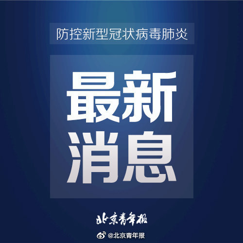
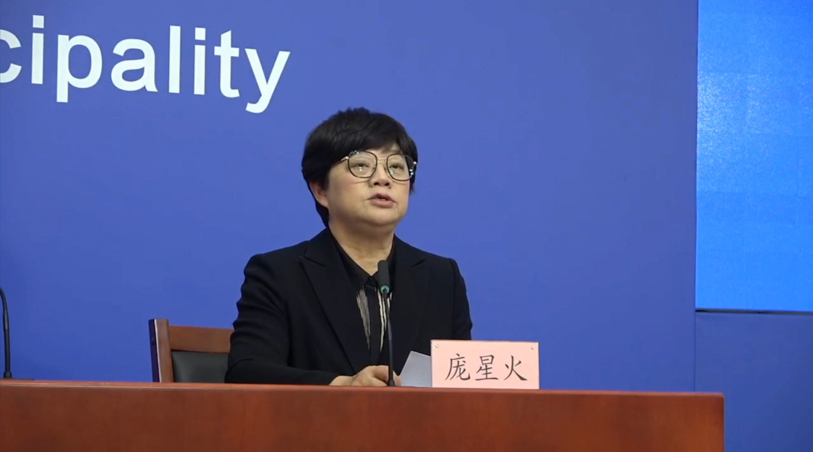

唐朝时候，从长安有没有办法走水路到达海岸？看地图长安似乎和今天的黄河河道不算太远，离渭河更近，离汉江也不远。应该修个不长的运河就直通海路了？有打通过航线吗？

斯图亚特9
2022-01-24
斯图亚特9
2022-01-24
我想起来十多年前我的一个乌克兰同事喜欢把乌克兰比作台湾。不知道是不是乌克兰很多人都这么共情。
斯图亚特9
2022-01-24
普京这一招还是很牛的。在美国的战略重心已经转为全力压制中国的时候，搞这么一手希望掏得实利。美国应该是非常难受。看起来之前一直打算软了，但现在看上去似乎没法软，对抗中国需要倚重的欧洲不允许美国太软。估计拜登政府实在是不知道该怎么办了。
斯图亚特9
2022-01-24

@北京青年报:
【北京：出现这11类新冠相关症状 不要自行服药 应立即报告社区测核酸】 1月24日，#北京第274场疫情防控新闻发布会#召开。北京青年报记者从会上获悉，北京市疾控中心副主任庞星火提示，当前，本市正处于疫情防控关键时刻，继续坚持从严从快从紧，快速开展病例调查、风险人员及物品排查，人物同溯、同防、同查、同管，严格落实四方责任，坚决防止疫情扩散蔓延。
她再次提醒市民朋友，关注疫情信息、健康宝状态，与病例活动轨迹有交集或接到健康宝弹窗的人员立即向社区报告，配合集中隔离、居家隔离、健康监测、核酸检测等措施。集中隔离和居家隔离人员严格落实各项疫情防控规定，足不出户；健康监测人员和同住人员应减少外出，必须外出时要做好个人防护，不聚集、不聚餐。一旦出现发热、干咳、乏力、嗅觉味觉减退、鼻塞、流涕、咽痛、结膜炎、肌痛和腹泻等11类新冠肺炎相关症状，不要自行购药、服药，不乘坐公共交通工具、网约车等，须立即报告社区，采集标本进行检测并采取相应防控措施。市民朋友要增强防护意识，履行防控责任，坚持非必要不出京，减少聚餐聚会，触摸公共场所门帘、门把手后要及时洗手，在公共电梯间、卫生间等密闭空间要正确佩戴口罩。文/北京青年报记者 解丽 青流视频的微博视频
青流视频的微博视频
她再次提醒市民朋友，关注疫情信息、健康宝状态，与病例活动轨迹有交集或接到健康宝弹窗的人员立即向社区报告，配合集中隔离、居家隔离、健康监测、核酸检测等措施。集中隔离和居家隔离人员严格落实各项疫情防控规定，足不出户；健康监测人员和同住人员应减少外出，必须外出时要做好个人防护，不聚集、不聚餐。一旦出现发热、干咳、乏力、嗅觉味觉减退、鼻塞、流涕、咽痛、结膜炎、肌痛和腹泻等11类新冠肺炎相关症状，不要自行购药、服药，不乘坐公共交通工具、网约车等，须立即报告社区，采集标本进行检测并采取相应防控措施。市民朋友要增强防护意识，履行防控责任，坚持非必要不出京，减少聚餐聚会，触摸公共场所门帘、门把手后要及时洗手，在公共电梯间、卫生间等密闭空间要正确佩戴口罩。文/北京青年报记者 解丽
- 

17万次播放
01:38